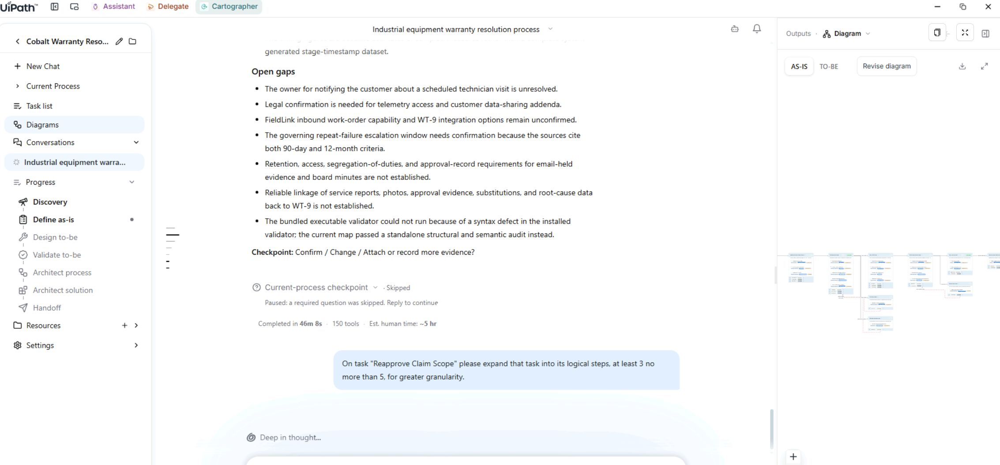
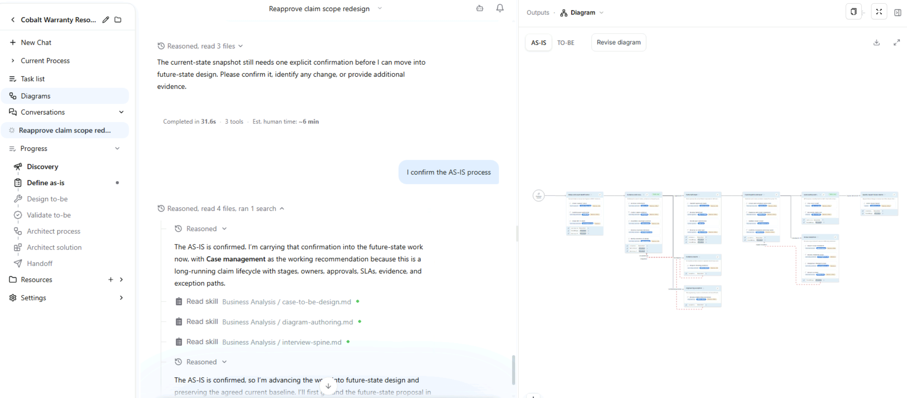
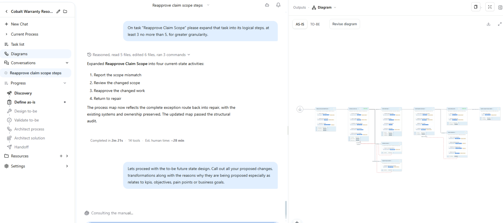
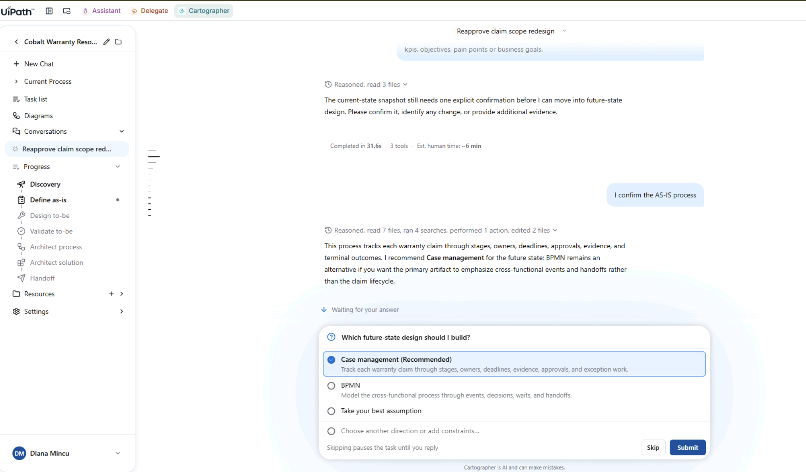
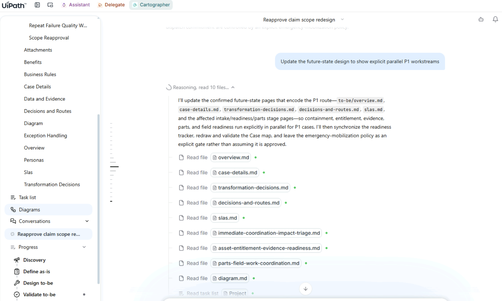
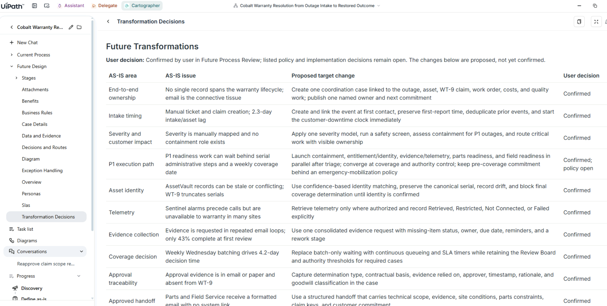
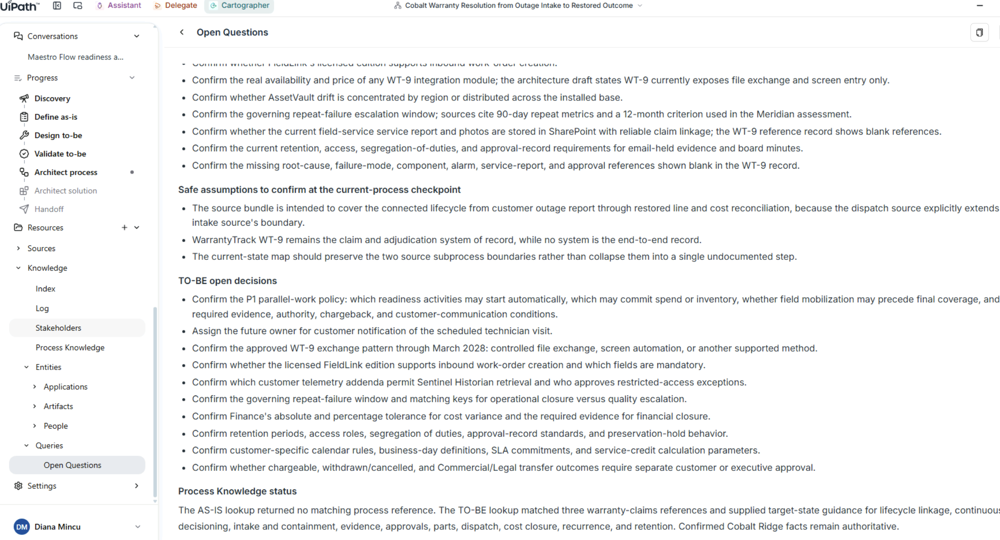

Design the future state¶
1. Steer the level of detail on one task¶
In the AS-IS design, find the task Reapprove Claim Scope. It's too shallow, so ask for more detail:

On task "Reapprove Claim Scope" please expand that task into its logical steps, at least 3 no more than 5, for greater granularity.

The task becomes a four-step sequence: report scope mismatch, review changed scope, reapprove it and return to repair. The diagram is redrawn around it.

2. Confirm the AS-IS¶
Cartographer needs an explicit confirmation of the current state before it moves on to the future state. Send:

3. Ask for the future state¶
Once you've confirmed the AS-IS, send:
Lets proceed with the to-be future state design. Call out all your proposed changes, transformations along with the reasons why they are being proposed especially as relates to kpis, objectives, pain points or business goals.

The agent consults process knowledge and finds an eleven-stage reference baseline to design against. It confirms a case is still the best execution style. Then it makes its first value argument: for P1 outages, run containment, entitlement, evidence and parts in parallel, instead of waiting behind a weekly coverage date. That's in service of the 24-hour P1 objective.
If it asks which future-state design to build, pick Case management (Recommended).

If the agent doesn't recommend parallel work for P1 outages, question it:
Then propose it yourself:
Would it make sense to run containment, entitlement, evidence and parts in parallel, instead of waiting behind a weekly coverage date? Or is that what you already proposed?
Finally, ask it to update the design:

This one takes a while
The future-state pass runs for several minutes. A good moment for a coffee.
4. Review the Transformation Decisions¶
Open Transformation Decisions under Future Design and walk through three or four rows.
Each change gets its own row: the AS-IS area, the AS-IS issue, the proposed target change, and a User decision column that stays at Proposed — Future Process Review until you confirm it. Every change is argued against a specific number: 24-hour P1 downtime, 2.3 days of intake and asset uncertainty, a 4.2-day coverage decision, first-time fix and auditability, or the 22% of repeat failures that never reach quality investigation.

Why this matters
This table shows whether the tool ties each change to business value or only redraws the diagram.
5. Review the open questions¶
Open Resources > Knowledge > Queries > Open Questions in the left navigation.
This page collects everything Cartographer couldn't confirm from your evidence: checks on the current process, safe assumptions to confirm, and open decisions for the TO-BE, such as Finance's tolerance for cost variance. Each item is a question for a person, so the list tells you who you still need to talk to before the design is signed off.
